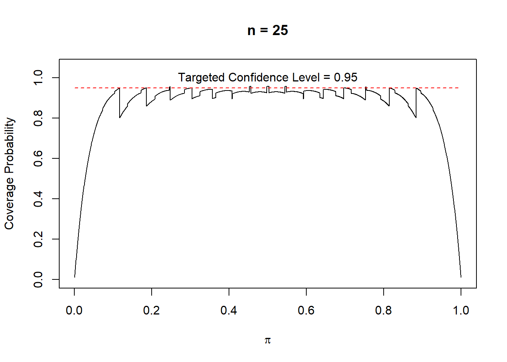

6 Confidence Intervals Based on Large Samples (8.4)
When we use maximum likelihood estimation to find an estimator \(\hat\theta(\boldsymbol{X})\) of some population parameter \(\theta\), we might be interested in constructing a confidence interval around this estimate to give a plausible range of values within which the true value of \(\theta\) lies. In order to do this, we need to make use of the asymptotic properties of maximum likelihood estimators. This states that, provided the sample size \(n\) is sufficiently large, then,
\[ \hat\theta(\boldsymbol{X})\sim N\left(\theta, \sqrt{I_n(\theta)^{-1}}\right) \]
In other words, as \(n\rightarrow\infty\), the expected value of the maximum likelihood estimator is equal to the population parameter it is estimating, \(\theta\), and that the standard deviation of the MLE is equal to \(\sqrt{I_n(\theta)^{-1}}\).
Here, \(I_n(\theta)\) is the Fisher Information for \(\theta\). This can be found as,
\[ I_n(\theta)=-E\left[\frac{\partial^2\ln L(\theta|\boldsymbol{X})}{\partial\theta^2}\right] \]
Knowing the above asymptotic property of maximum likelihood estimators allows us to construct a general \((1-\alpha)\cdot100\%\) asymptotic confidence interval for any MLE as,
\[\begin{equation} \tag{8.37} CI_{1-\alpha}(\theta)=\left[\hat\theta(\boldsymbol{x})-z_{1-\frac{\alpha}{2}}\cdot\sqrt{I_n\big(\hat\theta(\boldsymbol{x})\big)^{-1}},\hat\theta(\boldsymbol{x})+z_{1-\frac{\alpha}{2}}\cdot\sqrt{I_n\big(\hat\theta(\boldsymbol{x})\big)^{-1}}\right] \end{equation}\]
This will allow you to construct a confidence interval for the maximum likelihood estimator of any population parameter, however we are going to focus on confidence intervals for the population proportion of success, denoted by \(\pi\).
6.1 Population Proportions
6.1.1 Asymptotic/Wald Confidence Interval (8.4.1)
We have seen in Lab 8 that when working with a Bernoulli distribution (i.e. when \(X\sim\mbox{Bernoulli}(\pi)\)), the maximum likelihood estimate of the population proportion of success \(\pi\) is equal to \(\hat\pi(\boldsymbol{x})=\bar x\).
Whilst finding this, we also saw that the second order derivative of the log-likelihood function for \(\pi\) with respect to \(\theta\) is,
\[ \frac{\partial^2\ln L(\pi|\boldsymbol{X})}{\partial\pi^2}=\frac{-\sum_{i=1}^nx_i}{\pi^2}-\frac{n-\sum_{i=1}^nx_i}{(1-\pi)^2} \]
We can use the second order derivative to find the Fisher Information as follows.
\[ \begin{align} I_n(\theta)=-E\left[\frac{\partial^2\ln L(\pi|\boldsymbol{X})}{\partial\pi^2}\right]&=-E\left[\frac{-\sum_{i=1}^nX_i}{\pi^2}-\frac{n-\sum_{i=1}^nX_i}{(1-\pi)^2}\right]\\ &=E\left[\frac{\sum_{i=1}^nX_i}{\pi^2}\right]+E\left[\frac{n-\sum_{i=1}^nX_i}{(1-\pi)^2}\right]\\ &=\frac{\sum_{i=1}^nE[X_i]}{\pi^2}+\frac{n-\sum_{i=1}^nE[X_i]}{(1-\pi)^2}\\ &=\frac{n\pi}{\pi^2}+\frac{n-n\pi}{(1-\pi)^2}\\ &=\frac{n}{\pi}+\frac{n}{1-\pi}=\frac{n}{\pi(1-\pi)} \end{align} \]
Therefore we can say, using the asymptotic properties of MLEs, that as \(n\rightarrow\infty\),
\[ \hat\pi(\boldsymbol{x})\sim N\left(\pi, \sqrt{\frac{\pi(1-\pi)}{n}}\right) \]
If we denote the sample proportion of success by \(p\), then a \((1-\alpha)\cdot100\%\) asymptotic confidence interval for the population proportion \(\pi\), commonly referred to as a Wald interval, is given by,
\[\begin{equation} \tag{8.43} CI_{1-\alpha}(\pi)=\left[p-z_{1-\frac{\alpha}{2}}\cdot\sqrt{\frac{p(1-p)}{n}},p+z_{1-\frac{\alpha}{2}}\cdot\sqrt{\frac{p(1-p)}{n}}\right] \end{equation}\]
This interval can be used whether we are trying to find the population proportion of success from a series of Bernoulli trials, or from a Binomial distribution.
The farmer sells a proportion of their potato yield to supermarkets for sale to the public, and the rest of the yield to crisp manufacturers. Within the yields data frame, the column supermarket is a binary variable; a 1 indicates that the yield from that particular field has been sold to supermarkets and a 0 indicates that the field's yield has been sold to manufacturers. Find a 95% Wald interval for the population proportion of yields from potato fields which are sold directly to supermarkets.
We can think of whether or not a field's yield is sold to supermarkets as being a realisation from a Bernoulli trial with some unknown probability of being sold to supermarkets, \(\pi\). In other words, the 21 values in the supermarket column come from a \(\mbox{Bernoulli}(\pi)\) distribution.
We have already seen that for Bernoulli distributions, the maximum likelihood estimator for \(\pi\) is \(\hat\pi(\boldsymbol{x})=\bar x\). We can find this value for the observations in the supermarket column as follows.
[1] 0.7142857Therefore, the maximum likelihood estimate of \(\pi\) is 0.7143. We can use this as \(p\) in the formula above to construct the 95% Wald interval for \(\pi\). There a couple of ways we could find this interval in R.
We already know that there are a total of 21 fields growing potatoes, that is \(n=21\), and that \(p=\bar x=0.7143\). We can save these values in R as follows.
Now we need to find \(z_{1-\frac{\alpha}{2}}\) which is the \((1-\frac{\alpha}{2})\)th quantile from the standard normal distribution. In our case, because we are interested in a 95% confidence interval, \(\alpha=0.05\), so we are looking for the \(\left(1-\frac{0.05}{2}\right)=0.975\)th quantile. This can be found using the qnorm() function as follows.
Calculating the 95% Wald interval is now just a case of subbing in all the values into the formula shown above. We can do this in R as follows.
[1] 0.5210709 0.9075005This interval tells us that we are 95% confident that the true population proportion of potato field yields, \(\pi\), which are sold to supermarkets lies in the interval \(\left[0.5211,\, 0.9075\right]\).
There is a function in R which can do this calculation for us automatically. The binom.confint() function is part of the package binom, so make sure to load this package into your R session by using the code library(binom). binom.confint() can take the following arguments,
x =: this is the number of Bernoulli trials which were successful i.e. the number of trials for which a 1 is observed.n =: this is the total number of Bernoulli trials included in the sample.conf.int =: the is the confidence level for the desired interval. It needs to be put in as a decimal, so for a 95% confidence interval, we would use0.95for example.methods =: this is the method used to calculate the confidence interval for \(\pi\). To construct a Wald interval, it should be set to"asymptotic".
The code below uses binom.confint() to find a 95% Wald interval for the population proportion of potato field yields which are sold to supermarkets. The actual interval is contained in the returned values lower and upper.
library(binom)
binom.confint(x = sum(yields$supermarket), n = 21,
conf.level = 0.95, methods = "asymptotic")| method | x | n | mean | lower | upper |
|---|---|---|---|---|---|
| asymptotic | 15 | 21 | 0.7142857 | 0.5210709 | 0.9075005 |
This interval is in agreement with the one found above, and we would say that the true population proportion of potato field yields, \(\pi\), which are sold to supermarkets lies in the interval \(\left[0.5211,\, 0.9075\right]\) with 95% confidence.
Coverage probability
The coverage probability of a confidence interval is the proportion of all possible confidence intervals for a population parameter which contain the true value for that parameter. In this case, for population proportions of success, the coverage probability is the proportion of confidence intervals constructed around our estimate \(\hat\pi(\boldsymbol{x})\) which contain the true value \(\pi\). Ideally, the coverage probability should be equal to \((1-\alpha)\), which is known as the nominal confidence level.
The plot below shows the coverage probability of 95% confidence intervals for various values of \(\pi\) when \(X\sim\mbox{Bin}(25, \pi)\). This shows that there are very few values of \(\pi\) for which the confidence interval resulting from (8.43) above has coverage probability of 0.95. For most values of \(\pi\), the coverage probability of the 95% confidence intervals falls below the desired level of 0.95.

Figure 6.1: Coverage probabilities of 95% confidence intervals for various values of \(\pi\) when \(X\sim\mbox{Bin}(25,\pi)\).
See Section 8.4.1 to see further examples on constructing Wald intervals and for the code to produce Figure 6.1.
6.1.2 Score/Wilson Confidence Interval (8.4.1.1)
An alternative \((1-\alpha)\cdot100\%\) confidence interval for the population proportion of success \(\pi\) is given by the Wilson interval,
\[\begin{equation} \tag{8.47} \begin{split} CI_{1-\alpha}(\pi)=\Bigg[&\frac{p+\frac{z^2_{1-\alpha/2}}{2n}-z_{1-\frac{\alpha}{2}}\cdot\sqrt{\frac{p(1-p)}{n}+\frac{z^2_{1-\alpha/2}}{4n^2}}}{\left(1+\frac{z^2_{1-\alpha/2}}{n}\right)},\\ &\,\,\,\,\,\,\,\,\frac{p+\frac{z^2_{1-\alpha/2}}{2n}+z_{1-\frac{\alpha}{2}}\cdot\sqrt{\frac{p(1-p)}{n}+\frac{z^2_{1-\alpha/2}}{4n^2}}}{\left(1+\frac{z^2_{1-\alpha/2}}{n}\right)}\Bigg] \end{split} \end{equation}\]
Wilson intervals give a confidence interval with coverage probability which is closer to the \(1-\alpha\) level compared to Wald intervals.
Note that if the sample size is large, then the Wilson interval is roughly equivalent to the Wald interval. This is because with large values of \(n\), \(\frac{z_{1-\alpha/2}^2}{2n}\), \(\frac{z_{1-\alpha/2}^2}{4n^2}\approx0\) and \(\frac{z_{1-\alpha/2}^2}{n}\) are all approximately 0.
We can calculate a 95% Wilson interval for the population proportion of potato field yields which are sold to supermarkets, \(\pi\), in a couple of different ways. Remember, this sample information is stored in the column supermarket from the data frame yields.
Because the formula for Wilson intervals is quite involved, it is better to use functions in R to find Wilson intervals, rather than using R as a calculator since there are many chances that an error could be made.
The binom.confint() function from binom package can be used to calculate Wilson intervals. In order to do this, the argument methods = "wilson" needs to be included as follows. The actual interval is contained in the returned values lower and upper.
| method | x | n | mean | lower | upper |
|---|---|---|---|---|---|
| wilson | 15 | 21 | 0.7142857 | 0.5004362 | 0.8618614 |
The Wilson interval tells us that the population proportion of potato field yields, \(\pi\), which are sold to supermarkets lies in the interval \(\left[0.5004,\, 0.8619\right]\) with 95% confidence.
An alternative function which can be used to calculate Wilson intervals is the prop.test() function. The arguments that prop.test() can take are,
x =: this is the number of Bernoulli trials which were successful i.e. the number of trials for which a 1 is observed.n =: this is the total number of Bernoulli trials included in the sample.conf.int =: the is the confidence level for the desired interval. It needs to be put in as a decimal, so for a 95% confidence interval, we would use0.95for example.correct =: this takes the valueTRUEorFALSEto indicate whether what is known as a Yates' continuity correction should be applied to the estimate for \(p\) in the formula. By default, the valueTRUEis used and this correction is applied. You can read more about the Yates' continuity correction in Section 8.4.1.1 of the textbook.
The code below calculates a 95% Wilson interval for the population proportion of potato field yields which are sold to supermarkets, \(\pi\). The confidence interval itself can be extracted by including $conf.int at the end of the function.
[1] 0.5004362 0.8618614
attr(,"conf.level")
[1] 0.95This interval is in agreement with the one found before and, again, tells us that the population proportion of potato field yields, \(\pi\), which are sold to supermarkets lies in the interval \(\left[0.5004,\, 0.8619\right]\) with 95% confidence.
See Section 8.4.1.1 of Probability and Statistics with R for more details on this result.
NB: Sections 8.4.1.2, 8.4.1.3 and 8.4.1.4 are not covered/examinable.
6.2 Difference in population proportions (8.4.2)
For random samples of size \(n_X\) and \(n_Y\) taken from two normal distributions, \(X\) and \(Y\) respectively, then the difference in the population proportions of success, \(\pi_X\) and \(\pi_Y\) may be of interest.
A \((1-\alpha)\cdot100\%\) confidence interval for the difference in population proportions, \(\pi_X-\pi_Y\), can be calculated based on the difference in sample proportions, \(p_X-p_Y\), as,
\[\begin{equation} \tag{8.52} \begin{split} CI_{1-\frac{\alpha}{2}}(\pi_X-\pi_Y)=\Bigg[&(p_X-p_Y)-z_{1-\frac{\alpha}{2}}\cdot\sqrt{\frac{p_X(1-p_X)}{n_X}+\frac{p_Y(1-p_Y)}{n_Y}},\\ &\,\,\,\,\,\,\,\,(p_X-p_Y)+z_{1-\frac{\alpha}{2}}\cdot\sqrt{\frac{p_X(1-p_X)}{n_X}+\frac{p_Y(1-p_Y)}{n_Y}}\Bigg] \end{split} \end{equation}\]
If \(|p_X-p_Y|>\frac{1}{2}\left(\frac{1}{n_X}+\frac{1}{n_Y}\right)\), then a continuity correction is generally applied to the above formula. When this condition is satisfied, \(\frac{1}{2}\left(\frac{1}{n_X}+\frac{1}{n_Y}\right)\) is subtracted from the lower limit of the confidence interval above, and added to the upper limit.
The function prop.test() uses this continuity correction automatically whenever the condition is satisfied by the difference in sample proportions.
See Section 8.4.2 of Probability and Statistics with R for some examples of using this result.